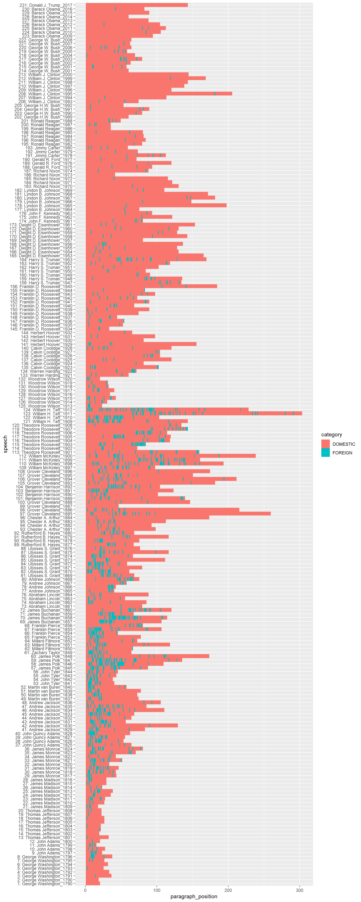

Tutorial 7: Classification
Andreas Niekler, Gregor Wiedemann
2020-10-07
In this tutorial we show the use of supervised machine learning for text classification. The basic idea is to compute a model based on training data. Training data usually are hand-coded documents or text snippets associated with a specific category (class). From these texts, features (e.g. words) are extracted and associated with categories in the model. The model then can be utilized to categorize new texts.
We cover basic principles of the process such as cross-validation and feature engineering in the following steps:
- Read text data
- Read training data
- Build feature matrix
- Classify (LiblineaR)
- K-fold cross validation
- Optimize C
- Optimize features: stopwords, bi-grams, stemming
- Final classification
As data, again we use the “State of the Union”-addresses. But this time, we operate on paragraphs instead of documents. The file data/sotu_paragraphs.csv provides the speeches in the appropriate format. For each paragraph, we want to know whether it covers content related to domestic or foreign affairs.
1 Read paragraphs
As already known, we read the text source (21334 paragraphs from 231 speeches). For the moment, we apply very basic preprocessing.
options(stringsAsFactors = FALSE)
library(quanteda)
textdata <- read.csv("data/sotu_paragraphs.csv", sep = ";", encoding = "UTF-8")
corpus <- corpus(textdata$text, docnames = textdata$doc_id)
# Build a dictionary of lemmas
lemma_data <- read.csv("resources/baseform_en.tsv", encoding = "UTF-8")
# Create a DTM
corpus_token <- corpus %>%
tokens(remove_punct = TRUE, remove_numbers = TRUE, remove_symbols = TRUE) %>%
tokens_tolower()2 Load training data
We provide 300 manually annotated example paragraphs as training data. In a CSV-file, the paragraph id and the corresponding category is stored.
# Read previously annotated training data
trainingData <- read.csv2("data/paragraph_training_data_format.csv", stringsAsFactors = T)
# Training data format
colnames(trainingData)## [1] "ID" "LABEL"# Example paragraph Foreign Affairs
set.seed(13)
domestic_example <- sample(trainingData$ID[trainingData$LABEL == "DOMESTIC"], 1)
as.character(texts(corpus)[domestic_example])## [1] "By the use of the State banks, which do not derive their charters from\nthe General Government and are not controlled by its authority, it is\nascertained that the moneys of the United States can be collected and\ndisbursed without loss or inconvenience, and that all the wants of the\ncommunity in relation to exchange and currency are supplied as well as\nthey have ever been before. If under circumstances the most unfavorable\nto the steadiness of the money market it has been found that the\nconsiderations on which the Bank of the United States rested its claims\nto the public favor were imaginary and groundless, it can not be\ndoubted that the experience of the future will be more decisive against\nthem."foreign_example <- sample(trainingData$ID[trainingData$LABEL == "FOREIGN"], 1)
as.character(texts(corpus)[foreign_example])## [1] "The International Atomic Energy Agency confirmed in the 1990s that Saddam\nHussein had an advanced nuclear weapons development program, had a design for a\nnuclear weapon, and was working on five different methods of enriching uranium\nfor a bomb. The British Government has learned that Saddam Hussein recently\nsought significant quantities of uranium from Africa. Our intelligence sources\ntell us that he has attempted to purchase high-strength aluminum tubes suitable\nfor nuclear weapons production. Saddam Hussein has not credibly explained these\nactivities. He clearly has much to hide."How is the ratio between domestic and foreign content in the training data?
classCounts <- table(trainingData[, "LABEL"])
print(classCounts)##
## DOMESTIC FOREIGN
## 209 91numberOfDocuments <- nrow(trainingData)For our first classification attempt, we create a Document-Term Matrix from the preprocessed corpus and use the extracted single words (unigrams) as features for the classification. Since the resulting DTM might contain too many words, we restrict the vocabulary to a minimum frequency.
# Base line: create feature set out of unigrams
# Probably the DTM is too big for the classifier. Let us reduce it
minimumFrequency <- 5
DTM <- corpus_token %>%
dfm() %>%
dfm_trim(min_docfreq = minimumFrequency, max_docfreq = Inf)
# How many features do we have?
dim(DTM)## [1] 21334 109503 Classification
Now we build a linear classification model with the LiblineaR package. The package LiblineaR wraps around the open source library LIBLINEAR which provides a very fast implementations for two text classification algorithms: 1. Logistic Regression, and 2. Support Vector Machines (SVM) with a linear kernel. For both algorithms, different regularization methods exist (e.g. L1, and L2-regularization). The combination of algorithms and regularization can be controlled by the type parameter of the LiblineaR function. We stick to the default type, L2-regularized logistic regression (LR), since it usually achieves good performance in text classification.
First, we load the packages. Since Liblinear requires a special Sparse Matrix format, we also load the “SparseM” package and a conversion function which allows to convert quanteda's dfm-matrices into SparseM-matrices.
Then, we split the annotated data into a training set (80%) and a test set (20%) using a boolean selector. The expression assigned to selector_idx creates a boolean vector of length 300 containing a FALSE value in every fifths position. This selector is used to select to training set. Its inverted vector (!) is used to select the test set.
require(LiblineaR)
require(SparseM)
source("utils.R")
annotatedDTM <- DTM[trainingData[, "ID"], ]
annotatedDTM <- convertMatrixToSparseM(annotatedDTM)
annotatedLabels <- trainingData[, "LABEL"]
# split into training and test set
selector_idx <- rep(c(rep(TRUE, 4), FALSE), length.out = numberOfDocuments)
trainingDTM <- annotatedDTM[selector_idx, ]
trainingLabels <- annotatedLabels[selector_idx]
testDTM <- annotatedDTM[!selector_idx, ]
testLabels <- annotatedLabels[!selector_idx]
# create LR classification model
model <- LiblineaR(trainingDTM, trainingLabels)
summary(model)## Length Class Mode
## TypeDetail 1 -none- character
## Type 1 -none- numeric
## W 10951 -none- numeric
## Bias 1 -none- numeric
## ClassNames 2 factor numeric
## NbClass 1 -none- numericThe model created by the LiblineaR function can now be utilized to predict the labels of the test set. Then we compare the result of the automatic classification to our known labels to determine the accuracy of the process.
classification <- predict(model, testDTM)
predictedLabels <- classification$predictions
contingencyTable <- table(predictedLabels, testLabels)
print(contingencyTable) ## testLabels
## predictedLabels DOMESTIC FOREIGN
## DOMESTIC 24 5
## FOREIGN 21 10accuracy <- sum(diag(contingencyTable)) / length(testLabels)
print(accuracy) # share of correctly classified paragraphs## [1] 0.567The accuracy of 0.567 appears moderate for a first try. But how does it actually relate to a base line? Think of the imbalanced class proportions in our training set. Let us create a pseudo classification as base line, in which we do not classify at all, but simply assume the label “DOMESTIC” or “FOREIGN” for each paragraph.
We further employ a function called F.measure which gives more differentiated measures than simple accuracy (A) to determine the classification quality. The F.measure (F) is the harmonic mean of Precision (P) and Recall (R) (see https://en.wikipedia.org/wiki/Precision_and_recall#Definition_.28classification_context.29 for Details).
# Create pseudo classification
pseudoLabelsDOM <- factor(rep("DOMESTIC", length(testLabels)), levels(testLabels))
pseudoLabelsFOR <- factor(rep("FOREIGN", length(testLabels)), levels(testLabels))
# Evaluation of former LR classification with F-measures
F.measure(predictedLabels, testLabels, positiveClassName = "DOMESTIC")## P R S F A Pos.
## 0.828 0.533 0.667 0.649 0.567 45.000F.measure(predictedLabels, testLabels, positiveClassName = "FOREIGN")## P R S F A Pos.
## 0.323 0.667 0.533 0.435 0.567 15.000# Evaluation of pseudo classification with F-measures
F.measure(pseudoLabelsDOM, testLabels, positiveClassName = "DOMESTIC")## P R S F A Pos.
## 0.750 1.000 0.000 0.857 0.750 45.000F.measure(pseudoLabelsFOR, testLabels, positiveClassName = "FOREIGN")## P R S F A Pos.
## 0.25 1.00 0.00 0.40 0.25 15.00This little experiment shows that depending on the definition of our positive class, the accuracy is either 25% or 75% if not classifying at all. In both cases the specificity (S), the true negative rate, is zero. From this, we can learn two things:
- If classes in training/test sets are imbalanced, accuracy might be a misleading measurement. Other measure should be considered additionally.
- To utilize accuracy and F-measure in a meaningful way, the less frequent class should be defined as POSITIVE class (FOREIGN in our case).
4 K-fold cross validation
To evaluate a classifier, the training data can be divided into training and test data. The model learns on the former and is evaluated with the latter. In this procedure, we unfortunately lose the test data to learn from. If there is little training data available, the k-fold cross-validation is a more suitable procedure.
For this, training data is split into e.g. K = 10 parts. Then k-1 parts are used for training and 1 part is used for testing. This process is repeated k times, with another split of the overall data set for testing in each iteration.
The final result is determined from the average of the quality of the k runs. This allows a good approximation to the classification quality, including all training data.
The get_k_fold_logical_indexes function introduced below returns a logical vector for the fold j for cross-validation. It splits a training data record of the size n into k folds. The resulting vector and its negated vector can be used for easy training data / test data selection.
get_k_fold_logical_indexes <- function(j, k, n) {
if (j > k) stop("Cannot select fold larger than nFolds")
fold_lidx <- rep(FALSE, k)
fold_lidx[j] <- TRUE
fold_lidx <- rep(fold_lidx, length.out = n)
return(fold_lidx)
}
# Example usage
get_k_fold_logical_indexes(1, k = 10, n = 12)## [1] TRUE FALSE FALSE FALSE FALSE FALSE FALSE FALSE FALSE FALSE TRUE FALSEget_k_fold_logical_indexes(2, k = 10, n = 12)## [1] FALSE TRUE FALSE FALSE FALSE FALSE FALSE FALSE FALSE FALSE FALSE TRUEget_k_fold_logical_indexes(3, k = 10, n = 12)## [1] FALSE FALSE TRUE FALSE FALSE FALSE FALSE FALSE FALSE FALSE FALSE FALSENow we run 1) splitting of the annotated data, 2) model computation and testing in one for-loop.
k <- 10
evalMeasures <- NULL
for (j in 1:k) {
# create j-th boolean selection vector
currentFold <- get_k_fold_logical_indexes(j, k, nrow(trainingDTM))
# select training data split
foldDTM <- annotatedDTM[!currentFold, ]
foldLabels <- annotatedLabels[!currentFold]
# create model
model <- LiblineaR(foldDTM, foldLabels)
# select test data split
testSet <- annotatedDTM[currentFold, ]
testLabels <- annotatedLabels[currentFold]
# predict test labels
predictedLabels <- predict(model, testSet)$predictions
# evaluate predicted against test labels
kthEvaluation <- F.measure(predictedLabels, testLabels, positiveClassName = "FOREIGN")
# combine evaluation measures for k runs
evalMeasures <- rbind(evalMeasures, kthEvaluation)
}
# Final evaluation values of k runs:
print(evalMeasures)## P R S F A Pos.
## kthEvaluation 0.333 0.400 0.600 0.364 0.533 10
## kthEvaluation 0.737 0.875 0.643 0.800 0.767 16
## kthEvaluation 0.333 0.429 0.739 0.375 0.667 7
## kthEvaluation 0.467 0.778 0.619 0.583 0.667 9
## kthEvaluation 0.333 0.571 0.652 0.421 0.633 7
## kthEvaluation 0.312 0.714 0.522 0.435 0.567 7
## kthEvaluation 0.471 0.727 0.526 0.571 0.600 11
## kthEvaluation 0.500 0.833 0.792 0.625 0.800 6
## kthEvaluation 0.526 1.000 0.550 0.690 0.700 10
## kthEvaluation 0.385 0.625 0.636 0.476 0.633 8# Average over all folds
print(colMeans(evalMeasures))## P R S F A Pos.
## 0.440 0.695 0.628 0.534 0.657 9.100Accuracy is around 66 %, F-measure is around 53 %. Let’s try some approaches to optimize the automatic classification.
5 Optimization
These first tries have clarified how to utilize and evaluate machine learning functions for text in R. Now we concentrate on optimization strategies to get better results from the automatic classification process.
5.1 C-Parameter
For a linear classification model, the cost parameter (C-parameter) is the most important parameter to tweak (for other SVM kernels such as the radial or polynomial kernel there are other important parameters which influence the shape of the kernel function). The C-parameter determines the cost of classifications on the training data during training.
High values of C lead to a high costs of misclassification. The decision boundary which the classifier learns, will try to avoid any misclassification. But, values too high can lead to an overfitting of the model. This means, it adapts well to the training data, but classification will more likely fail on new test data.
Low values of C lead to less strict decision boundaries, which accepts some misclassifications. Such a model might generalize better on unseen data. But in the end, there is now exact method to determine a good C-value beforehand. It rather is an empirical question. To choose an optimal C-value, we simply try from a range of values, run k-fold-cross-validation for each single value and decide for the C which resulted in the best classification accuracy / F-measure. This is realized in the following for-loop, which utilizes the function k_fold_cross_validation. The function (have a look into F.measure.R) simply wraps the code for cross-validation, we used above.
cParameterValues <- c(0.003, 0.01, 0.03, 0.1, 0.3, 1, 3 , 10, 30, 100)
fValues <- NULL
for (cParameter in cParameterValues) {
print(paste0("C = ", cParameter))
evalMeasures <- k_fold_cross_validation(annotatedDTM, annotatedLabels, cost = cParameter)
fValues <- c(fValues, evalMeasures["F"])
}## [1] "C = 0.003"
## [1] "C = 0.01"
## [1] "C = 0.03"
## [1] "C = 0.1"
## [1] "C = 0.3"
## [1] "C = 1"
## [1] "C = 3"
## [1] "C = 10"
## [1] "C = 30"
## [1] "C = 100"plot(fValues, type="o", col="green", xaxt="n")
axis(1,at=1:length(cParameterValues), labels = cParameterValues)
bestC <- cParameterValues[which.max(fValues)]
print(paste0("Best C value: ", bestC, ", F1 = ", max(fValues)))## [1] "Best C value: 3, F1 = 0.542941816588523"From the empirical test, we can obtain C = 3 as optimal choice for the cost parameter. On the current training data set with the current features it achieves 0.543 F-score.
5.2 Optimized Preprocessing
Not only the classification model has parameters which can be optimized to improve the results. More important are the features used for classification. In our preprocessing chain above, we extracted single types and transformed them into lower case. We now add different preprocessing steps and check on the results. To get an optimal cost parameter for each new feature set, we wrapped the code for C-parameter optimization into the optimize_C function.
Stop word removal
Stop words often do not contribute to the meaning of a text. For the decision between DOMESTIC and FOREIGN affairs, we do not expect any useful information from them. So let’s remove them and if it improves the classifier.
stopwords_extended <- readLines("resources/stopwords_en.txt", encoding = "UTF-8")
# preprocessing
corpus_token_sw <- corpus %>%
tokens(remove_punct = TRUE, remove_numbers = TRUE, remove_symbols = TRUE) %>%
tokens_tolower() %>%
tokens_remove(pattern = stopwords_extended)
print(paste0("1: ", substr(paste(corpus_token_sw[4963],collapse = " "), 0, 400), '...'))## [1] "1: legislation extend colony newfoundland articles treaty washington 8th day protocol effect signed behalf united states great britain 28th day duly proclaimed day copy proclamation submitted herewith..."minimumFrequency <- 5
# Compute DTM
DTM <- corpus_token_sw %>%
dfm() %>%
dfm_trim(min_docfreq = minimumFrequency,max_docfreq = Inf)
# How many features do we have?
dim(DTM)## [1] 21334 10448# run cross validation
annotatedDTM <- convertMatrixToSparseM(DTM[trainingData[, "ID"], ])
best_C <- optimize_C(annotatedDTM, annotatedLabels)## [1] "C = 0.003"
## [1] "C = 0.01"
## [1] "C = 0.03"
## [1] "C = 0.1"
## [1] "C = 0.3"
## [1] "C = 1"
## [1] "C = 3"
## [1] "C = 10"
## [1] "C = 30"
## [1] "C = 100"
## [1] "Best C value: 0.03, F1 = 0.647465370415286"k_fold_cross_validation(annotatedDTM, annotatedLabels, cost = best_C)## P R S F A Pos.
## 0.596 0.725 0.800 0.647 0.780 9.100Bigrams
Now let us see, if the use of bigrams, i.e. concatenations of sequences of two words can improve the result. Bigrams, and larger n-Grams can capture important sequential contexts from texts such as negation, at least to a certain extent. For instance, “is not funny” will result in the features “is_not” and “not_funny”.
To extract n-gram features, the tokens_ngrams() of quanteda accepts a list of integers, e.g. 1:2 to create unigram and bigram features.
corpus_token_bigrams <- corpus %>%
tokens(remove_punct = TRUE, remove_numbers = TRUE, remove_symbols = TRUE) %>%
tokens_tolower() %>%
tokens_remove(pattern = stopwords_extended) %>%
tokens_ngrams(1:2)
print(paste0("1: ", substr(paste(corpus_token_bigrams[4963], collapse = " "), 0, 400), '...'))## [1] "1: legislation extend colony newfoundland articles treaty washington 8th day protocol effect signed behalf united states great britain 28th day duly proclaimed day copy proclamation submitted herewith legislation_extend extend_colony colony_newfoundland newfoundland_articles articles_treaty treaty_washington washington_8th 8th_day day_protocol protocol_effect effect_signed signed_behalf behalf_united..."# Compute DTM
DTM <- corpus_token_bigrams %>%
dfm() %>%
dfm_trim(min_docfreq = minimumFrequency, max_docfreq = Inf)
# How many features do we have now?
dim(DTM)## [1] 21334 22800# How do they look like?
sample(colnames(DTM), 10)## [1] "chamber" "congratulations" "exempt" "made_equal"
## [5] "sacrifices" "doubt_entertained" "settlement_international" "promote_general"
## [9] "number_ships" "frozen"# run cross validation
annotatedDTM <- convertMatrixToSparseM(DTM[trainingData[, "ID"], ])
best_C <- optimize_C(annotatedDTM, annotatedLabels)## [1] "C = 0.003"
## [1] "C = 0.01"
## [1] "C = 0.03"
## [1] "C = 0.1"
## [1] "C = 0.3"
## [1] "C = 1"
## [1] "C = 3"
## [1] "C = 10"
## [1] "C = 30"
## [1] "C = 100"
## [1] "Best C value: 0.03, F1 = 0.644608227558143"k_fold_cross_validation(annotatedDTM, annotatedLabels, cost = best_C)## P R S F A Pos.
## 0.591 0.725 0.795 0.645 0.777 9.100In this case, bi-gram and tri-gram features seem to not contribute positively to the classification result.
Minimum feature frequency
Up to this point, we dropped features occurring less than five times in our data. Let’s see if we include more features by increasing the minimum frequency.
# More features
minimumFrequency <- 2
DTM <- corpus_token_sw %>%
dfm() %>%
dfm_trim(min_docfreq = minimumFrequency, max_docfreq = Inf)
dim(DTM)## [1] 21334 16689annotatedDTM <- convertMatrixToSparseM(DTM[trainingData[, "ID"], ])
best_C <- optimize_C(annotatedDTM, annotatedLabels)## [1] "C = 0.003"
## [1] "C = 0.01"
## [1] "C = 0.03"
## [1] "C = 0.1"
## [1] "C = 0.3"
## [1] "C = 1"
## [1] "C = 3"
## [1] "C = 10"
## [1] "C = 30"
## [1] "C = 100"
## [1] "Best C value: 0.03, F1 = 0.651274894224809"k_fold_cross_validation(annotatedDTM, annotatedLabels, cost = best_C)## P R S F A Pos.
## 0.602 0.725 0.804 0.651 0.783 9.100It seems that feeding more features into the classifier has a little positive effect on the result.
Lemmatization
As a last method, we utilize lemmatization to unify different variants of the same semantic form (such as nation and nations).
corpus_token_lemma <- corpus %>%
tokens(remove_punct = TRUE, remove_numbers = TRUE, remove_symbols = TRUE) %>%
tokens_tolower() %>%
tokens_replace(lemma_data$inflected_form, lemma_data$lemma, valuetype = "fixed") %>%
tokens_remove(pattern = stopwords_extended) %>%
tokens_ngrams(1)
print(paste0("1: ", substr(paste(corpus_token_lemma[4963], collapse = " "), 0, 400), '...'))## [1] "1: legislation extend colony newfoundland article treaty washington 8th day protocol effect sign behalf unite state great britain 28th day duly proclaim follow day copy proclamation submit herewith..."minimumFrequency <- 2
DTM <- corpus_token_lemma %>%
dfm() %>%
dfm_trim(min_docfreq = minimumFrequency, max_docfreq = Inf)
dim(DTM)## [1] 21334 11523# run cross validation
annotatedDTM <- convertSlamToSparseM(DTM[trainingData[, "ID"], ])
best_C <- optimize_C(annotatedDTM, annotatedLabels)## [1] "C = 0.003"
## [1] "C = 0.01"
## [1] "C = 0.03"
## [1] "C = 0.1"
## [1] "C = 0.3"
## [1] "C = 1"
## [1] "C = 3"
## [1] "C = 10"
## [1] "C = 30"
## [1] "C = 100"
## [1] "Best C value: 0.03, F1 = 0.69005439005439"k_fold_cross_validation(annotatedDTM, annotatedLabels, cost = best_C)## P R S F A Pos.
## 0.641 0.767 0.817 0.690 0.807 9.100Each individual approach to optimize our text features for classification has some effect on the results. It takes some time to engineer an optimal feature set.
Further, testing different features must be done for each new task / language individually, since there is no “one-size fits all” approach to this.
GENERAL ADVISE: For this tutorial we utilized a rather small training set of 300 examples, 91 of them in the positive class. Better classification accuracy can be expected, if more training data is available. Hence, instead of spending too much time on feature optimization, it will probably be a better idea to invest into generation of more training data first.
6 Final classification
We now apply our best classification model to the entire data set, to determine the occurrence of FORGEIN/DOMESTIC affairs related content in each single speech.
# Final classification
annotatedDTM <- convertMatrixToSparseM(DTM[trainingData[, "ID"], ])
# C parameter tuning
best_C <- optimize_C(annotatedDTM, annotatedLabels)## [1] "C = 0.003"
## [1] "C = 0.01"
## [1] "C = 0.03"
## [1] "C = 0.1"
## [1] "C = 0.3"
## [1] "C = 1"
## [1] "C = 3"
## [1] "C = 10"
## [1] "C = 30"
## [1] "C = 100"
## [1] "Best C value: 0.03, F1 = 0.69005439005439"# final classification
final_model <- LiblineaR(annotatedDTM, annotatedLabels, cost = best_C)
final_labels <- predict(final_model, convertSlamToSparseM(DTM))$predictions
table(final_labels) / sum(table(final_labels))## final_labels
## DOMESTIC FOREIGN
## 0.594 0.406We see that the classifier puts the majority of the around 21,000 paragraphs into the DOMESTIC category. We can visualize the result as a bar chart with ggplot2. For better readability
speech_year <- substr(textdata$date, 0, 4)
speech_id <- textdata$speech_doc_id
paragraph_position <- unlist(sapply(table(speech_id), FUN = function(x) {1:x}))
presidents_df <- data.frame(
paragraph_position = paragraph_position,
speech = paste0(speech_id, ": ", textdata$president, "_", speech_year),
category = final_labels
)
# preserve speech order in chart by using factors
presidents_df$speech <- factor(presidents_df$speech, levels = unique(presidents_df$speech))
# Remove two very long speeches to beautify the plot (you can also skip this)
presidents_df <- presidents_df[!grepl("Carter_1981|Truman_1946", presidents_df$speech), ]
# plot classes of paragraphs for each speech as tile
require(ggplot2)
ggplot(presidents_df, aes(x = speech, y = paragraph_position, fill = category)) +
geom_tile(stat="identity") + coord_flip()
Can you see how DOMESTIC affairs related content gets more important over the course of centuries? Also the position of FOREIGN policy statements changes around the turn from the 19th to 20th century from the begginning of a speech to more dispersed positions thoughout the speech, and finally a tendency to rather place them at the end of speeches.
7 Optional exercises
- Divide the training data into a 60% training set and 40% test set. Train a classifier on the training set and evaluate the performance on the test set. As performance measure use Cohen’s Kappa, Krippendorff’a alpha, and simple Percentage agreement as provided in the
irrpackage for R.
## P R S F A Pos.
## 0.650 0.703 0.831 0.675 0.792 37.000## Cohen's Kappa for 2 Raters (Weights: unweighted)
##
## Subjects = 120
## Raters = 2
## Kappa = 0.522
##
## z = 5.73
## p-value = 9.99e-09## Krippendorff's alpha
##
## Subjects = 120
## Raters = 2
## alpha = 0.524## Percentage agreement (Tolerance=0)
##
## Subjects = 120
## Raters = 2
## %-agree = 79.2NOTICE: Since we have a very small annotated data set, the evaluation performance varies greatly with respect to the random selection of which paragraphs are sampled either into the training or test set.
- Use the
proba = Tparameter for thepredictmethod during the final classification to evaluate on label probabilities instead of discrete label decisions. Use the output of probabilities for the label “FOREIGN” to classify paragraphs as “FOREIGN” only if the label probability is greater than 60%. Visualize the result. What can you observe compared to the previous plot (decision boundary around 50%)?

2020, Andreas Niekler and Gregor Wiedemann. GPLv3. tm4ss.github.io